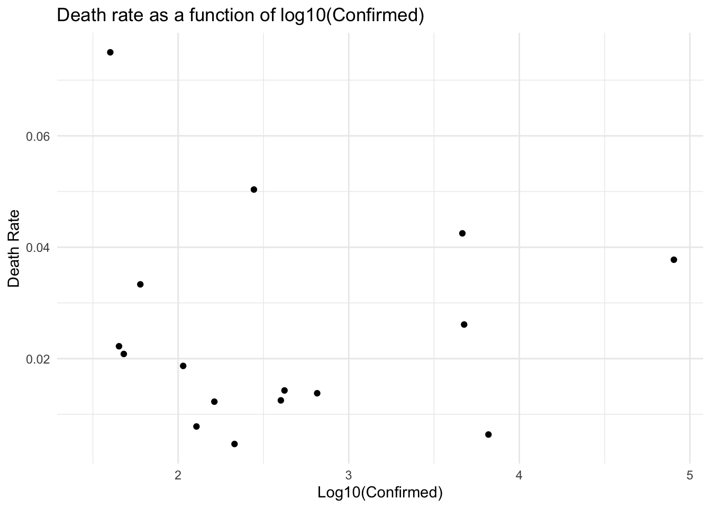
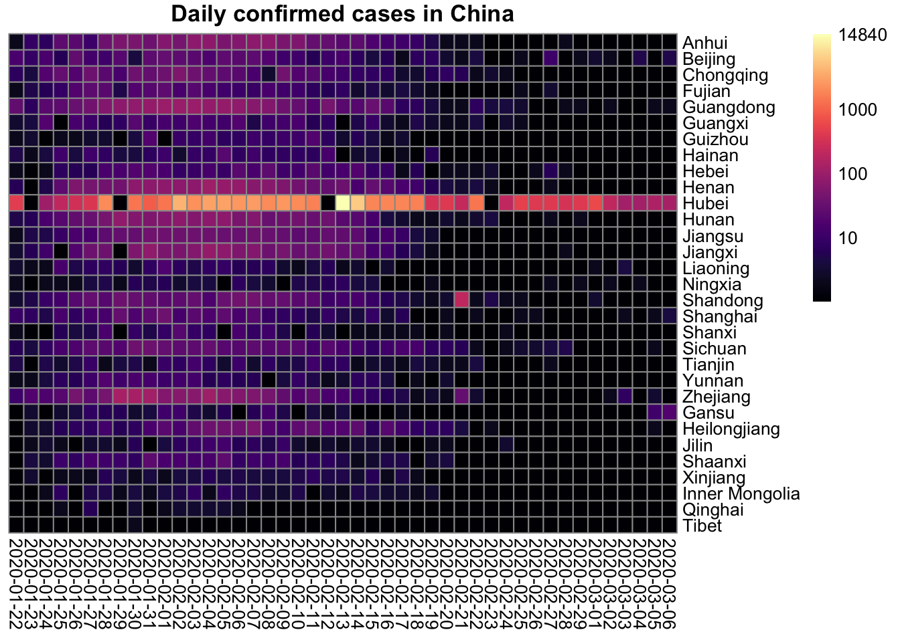
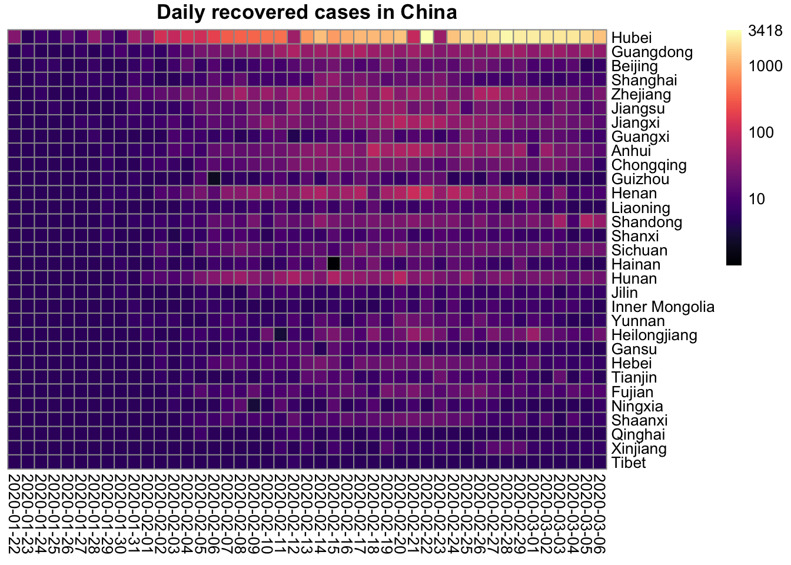
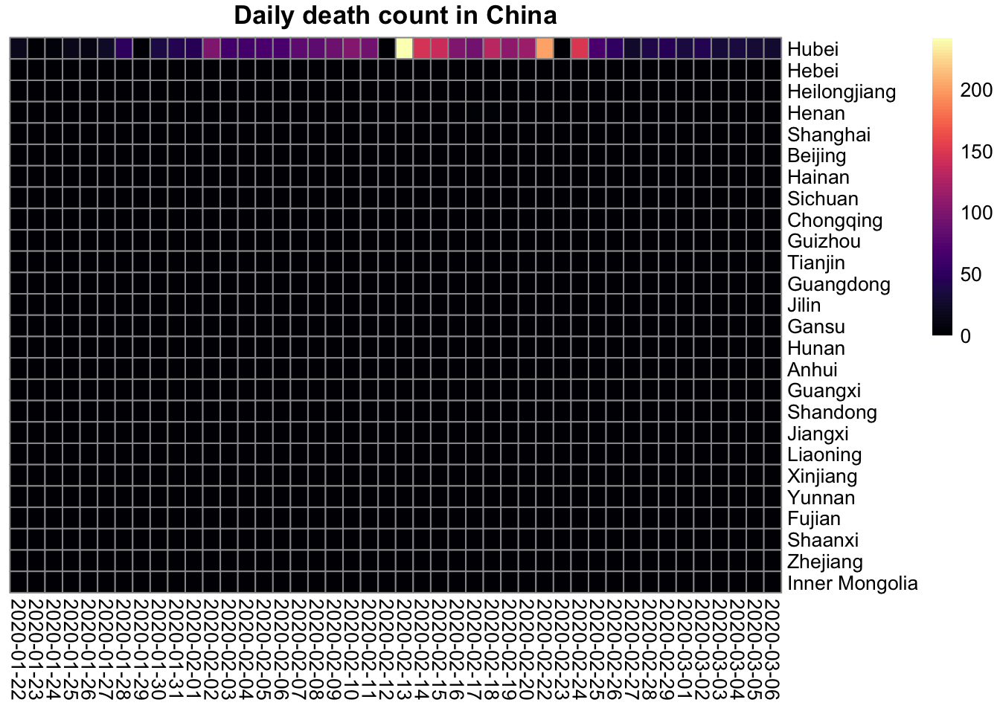
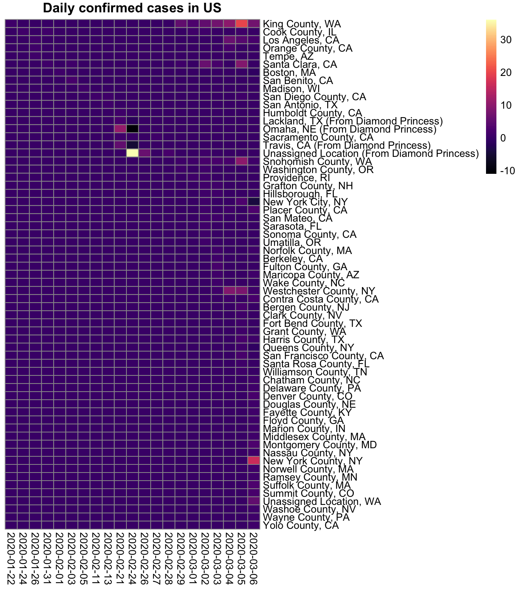

Last updated: 2020-03-07
Checks: 7 0
Knit directory: STA463_Spring_2020/
This reproducible R Markdown analysis was created with workflowr (version 1.4.0). The Checks tab describes the reproducibility checks that were applied when the results were created. The Past versions tab lists the development history.
Great! Since the R Markdown file has been committed to the Git repository, you know the exact version of the code that produced these results.
Great job! The global environment was empty. Objects defined in the global environment can affect the analysis in your R Markdown file in unknown ways. For reproduciblity it’s best to always run the code in an empty environment.
The command set.seed(20200213) was run prior to running the code in the R Markdown file. Setting a seed ensures that any results that rely on randomness, e.g. subsampling or permutations, are reproducible.
Great job! Recording the operating system, R version, and package versions is critical for reproducibility.
Nice! There were no cached chunks for this analysis, so you can be confident that you successfully produced the results during this run.
Great job! Using relative paths to the files within your workflowr project makes it easier to run your code on other machines.
Great! You are using Git for version control. Tracking code development and connecting the code version to the results is critical for reproducibility. The version displayed above was the version of the Git repository at the time these results were generated.
Note that you need to be careful to ensure that all relevant files for the analysis have been committed to Git prior to generating the results (you can use wflow_publish or wflow_git_commit). workflowr only checks the R Markdown file, but you know if there are other scripts or data files that it depends on. Below is the status of the Git repository when the results were generated:
Ignored files:
Ignored: .DS_Store
Ignored: .Rhistory
Ignored: .Rproj.user/
Ignored: lec/
Untracked files:
Untracked: docs/figure/corona.Rmd/
Unstaged changes:
Modified: analysis/index.Rmd
Note that any generated files, e.g. HTML, png, CSS, etc., are not included in this status report because it is ok for generated content to have uncommitted changes.
These are the previous versions of the R Markdown and HTML files. If you’ve configured a remote Git repository (see ?wflow_git_remote), click on the hyperlinks in the table below to view them.
| File | Version | Author | Date | Message |
|---|---|---|---|---|
| Rmd | d4b8b75 | dleelab | 2020-03-08 | added |
Most of R codes used here are obtained from https://ramikrispin.github.io/coronavirus/articles/intro_coronavirus_dataset.html
if(FALSE){
install.packages("dplyr")
install.packages("tidyr")
install.packages("plotly")
install.packages("DT")
install.packages("devtools")
devtools::install_github("RamiKrispin/coronavirus")
install.packages("viridis") #coloring
}
library(coronavirus)
library(dplyr)
Attaching package: 'dplyr'The following objects are masked from 'package:stats':
filter, lagThe following objects are masked from 'package:base':
intersect, setdiff, setequal, unionlibrary(tidyr)
library(plotly)Loading required package: ggplot2
Attaching package: 'plotly'The following object is masked from 'package:ggplot2':
last_plotThe following object is masked from 'package:stats':
filterThe following object is masked from 'package:graphics':
layoutlibrary(DT)
library(pheatmap)
library(viridis)Loading required package: viridisLitedata("coronavirus")
head(coronavirus)# A tibble: 6 x 7
Province.State Country.Region Lat Long date cases type
<chr> <chr> <dbl> <dbl> <date> <dbl> <chr>
1 "" Japan 36 138 2020-01-22 2 confirmed
2 "" South Korea 36 128 2020-01-22 1 confirmed
3 "" Thailand 15 101 2020-01-22 2 confirmed
4 Anhui Mainland China 31.8 117. 2020-01-22 1 confirmed
5 Beijing Mainland China 40.2 116. 2020-01-22 14 confirmed
6 Chongqing Mainland China 30.1 108. 2020-01-22 6 confirmedtotal_cases <- coronavirus %>%
group_by(type) %>%
summarise(cases = sum(cases)) %>%
mutate(type = factor(type, levels = c("confirmed", "recovered", "death")))
total_cases# A tibble: 3 x 2
type cases
<fct> <dbl>
1 confirmed 101800
2 death 3460
3 recovered 55866plot_ly(data = total_cases,
x = ~ type,
y = ~cases,
type = 'bar',
text = ~ paste(type, cases, sep = ": "),
hoverinfo = 'text') %>%
layout(title = "Coronavirus - Cases Distribution",
yaxis = list(title = "Number of Cases"),
xaxis = list(title = "Case Type"),
hovermode = "compare")confirmed_country <- coronavirus %>%
filter(type == "confirmed") %>%
group_by(Country.Region) %>%
summarise(total_cases = sum(cases)) %>%
mutate(perc = total_cases / sum(total_cases)) %>%
arrange(-total_cases)
confirmed_country %>%
head(10) %>%
datatable(rownames = FALSE,
colnames = c("Country", "Cases", "Perc of Total")) %>%
formatPercentage("perc", 2)coronavirus %>%
filter(type == "confirmed",
Country.Region != "Mainland China") %>%
group_by(Country.Region) %>%
summarise(total_cases = sum(cases)) %>%
arrange(-total_cases) %>%
mutate(country = factor(Country.Region, levels = Country.Region)) %>%
ungroup() %>%
plot_ly(labels = ~ country,
values = ~ total_cases,
type = "pie",
textposition = 'inside',
textinfo = 'label+percent',
insidetextfont = list(color = '#FFFFFF'),
hoverinfo = 'text',
text = ~ paste(country, "<br />",
"Number of confirmed cases: ", total_cases, sep = "")) %>%
layout(title = "Coronavirus - Confirmed Cases (Excluding China)")coronavirus %>%
filter(Country.Region != "Others") %>%
group_by(Country.Region, type) %>%
summarise(total_cases = sum(cases)) %>%
pivot_wider(names_from = type, values_from = total_cases) %>%
arrange(- confirmed) %>%
filter(confirmed >= 25) %>%
mutate(recover_rate = recovered / confirmed,
death_rate = death / confirmed) %>%
datatable(rownames = FALSE,
colnames = c("Country", "Confirmed", "Recovered", "Death", "Recovery Rate", "Death Rate")) %>%
formatPercentage("recover_rate", 2) %>%
formatPercentage("death_rate", 2) summ <- coronavirus %>%
filter(Country.Region != "Others") %>%
group_by(Country.Region, type) %>%
summarise(total_cases = sum(cases)) %>%
pivot_wider(names_from = type, values_from = total_cases) %>%
arrange(- confirmed) %>%
filter(confirmed >= 25) %>%
mutate(recover_rate = recovered / confirmed,
death_rate = death / confirmed)
ggplot(as.data.frame(summ), aes(x=log10(confirmed), y=death_rate)) +
geom_point() +
labs(title="Death rate as a function of log10(Confirmed)",
x="Log10(Confirmed)",
y = "Death Rate") +
theme_minimal()Warning: Removed 14 rows containing missing values (geom_point).
coronavirus %>%
filter(Country.Region == "Mainland China",
type == "confirmed") %>%
group_by(Province.State, type) %>%
summarise(total_cases = sum(cases)) %>%
pivot_wider(names_from = type, values_from = total_cases) %>%
arrange(- confirmed) %>%
plot_ly(labels = ~ Province.State,
values = ~confirmed,
type = 'pie',
textposition = 'inside',
textinfo = 'label+percent',
insidetextfont = list(color = '#FFFFFF'),
hoverinfo = 'text',
text = ~ paste(Province.State, "<br />",
"Number of confirmed cases: ", confirmed, sep = "")) %>%
layout(title = "Total China Confirmed Cases Dist. by Province")China <- coronavirus %>%
filter(Country.Region == "Mainland China",
type == "confirmed") %>%
pivot_wider(names_from = date, values_from=cases) %>%
select(-c(Country.Region, Lat, Long, type))
China <- as.data.frame(China)
China[is.na(China)] <- 0
rownames(China) <- China$Province.State
China$Province.State <- NULL
China <- as.data.frame(China)
China.log <- log10(China+1) # convert to log10 scale
pheatmap(China.log, cluster_rows=FALSE, cluster_cols=FALSE,
color=magma(100),
legend_breaks=c(1, 2, 3, max(China.log)),
legend_labels=c(10, 100, 1000, max(China)),
main="Daily confirmed cases in China")
China <- coronavirus %>%
filter(Country.Region == "Mainland China",
type == "recovered") %>%
pivot_wider(names_from = date, values_from=cases) %>%
select(-c(Country.Region, Lat, Long, type))
China <- as.data.frame(China)
China[is.na(China)] <- 0
rownames(China) <- China$Province.State
China$Province.State <- NULL
China <- as.data.frame(China)
China.log <- log10(China+5) # convert to log10 scale min is -4
pheatmap(China.log, cluster_rows=FALSE, cluster_cols=FALSE,
color=magma(100),
legend_breaks=c(1, 2, 3, max(China.log)),
legend_labels=c(10, 100, 1000, max(China)),
main="Daily recovered cases in China")
China <- coronavirus %>%
filter(Country.Region == "Mainland China",
type == "death") %>%
pivot_wider(names_from = date, values_from=cases) %>%
select(-c(Country.Region, Lat, Long, type))
China <- as.data.frame(China)
China[is.na(China)] <- 0
rownames(China) <- China$Province.State
China$Province.State <- NULL
China <- as.data.frame(China)
China.log <- log10(China+1) # convert to log10 scale
pheatmap(China, cluster_rows=FALSE, cluster_cols=FALSE,
color=magma(100),
main="Daily death count in China")
coronavirus %>%
filter(Country.Region == "US",
type == "confirmed") %>%
group_by(Province.State, type) %>%
summarise(total_cases = sum(cases)) %>%
pivot_wider(names_from = type, values_from = total_cases) %>%
arrange(- confirmed) %>%
plot_ly(labels = ~ Province.State,
values = ~confirmed,
type = 'pie',
textposition = 'inside',
textinfo = 'label+percent',
insidetextfont = list(color = '#FFFFFF'),
hoverinfo = 'text',
text = ~ paste(Province.State, "<br />",
"Number of confirmed cases: ", confirmed, sep = "")) %>%
layout(title = "Total US Confirmed Cases Dist. by County")US <- coronavirus %>%
filter(Country.Region == "US",
type == "confirmed") %>%
pivot_wider(names_from = date, values_from=cases) %>%
select(-c(Country.Region, Lat, Long, type))
US <- as.data.frame(US)
US[is.na(US)] <- 0
rownames(US) <- US$Province.State
US$Province.State <- NULL
US <- as.data.frame(US)
pheatmap(US, cluster_rows=FALSE, cluster_cols=FALSE,
color=magma(100),
main="Daily confirmed cases in US")
sessionInfo()R version 3.6.1 (2019-07-05)
Platform: x86_64-apple-darwin15.6.0 (64-bit)
Running under: macOS Mojave 10.14.6
Matrix products: default
BLAS: /Library/Frameworks/R.framework/Versions/3.6/Resources/lib/libRblas.0.dylib
LAPACK: /Library/Frameworks/R.framework/Versions/3.6/Resources/lib/libRlapack.dylib
locale:
[1] en_US.UTF-8/en_US.UTF-8/en_US.UTF-8/C/en_US.UTF-8/en_US.UTF-8
attached base packages:
[1] stats graphics grDevices utils datasets methods base
other attached packages:
[1] viridis_0.5.1 viridisLite_0.3.0 pheatmap_1.0.12
[4] DT_0.12 plotly_4.9.2 ggplot2_3.2.1
[7] tidyr_1.0.0 dplyr_0.8.3 coronavirus_0.1.0.9000
loaded via a namespace (and not attached):
[1] tidyselect_0.2.5 xfun_0.9 purrr_0.3.3
[4] colorspace_1.4-1 vctrs_0.2.0 htmltools_0.3.6
[7] yaml_2.2.0 utf8_1.1.4 rlang_0.4.5
[10] pillar_1.4.2 later_0.8.0 glue_1.3.1
[13] withr_2.1.2 RColorBrewer_1.1-2 lifecycle_0.1.0
[16] stringr_1.4.0 munsell_0.5.0 gtable_0.3.0
[19] workflowr_1.4.0 htmlwidgets_1.3 evaluate_0.14
[22] labeling_0.3 knitr_1.24 httpuv_1.5.1
[25] crosstalk_1.0.0 fansi_0.4.0 Rcpp_1.0.2
[28] xtable_1.8-4 scales_1.0.0 backports_1.1.4
[31] promises_1.0.1 jsonlite_1.6 mime_0.7
[34] fs_1.3.1 gridExtra_2.3 digest_0.6.20
[37] stringi_1.4.3 shiny_1.3.2 grid_3.6.1
[40] rprojroot_1.3-2 cli_1.1.0 tools_3.6.1
[43] magrittr_1.5 lazyeval_0.2.2 tibble_2.1.3
[46] crayon_1.3.4 whisker_0.3-2 pkgconfig_2.0.2
[49] zeallot_0.1.0 data.table_1.12.2 assertthat_0.2.1
[52] rmarkdown_1.15 httr_1.4.1 R6_2.4.0
[55] git2r_0.26.1 compiler_3.6.1